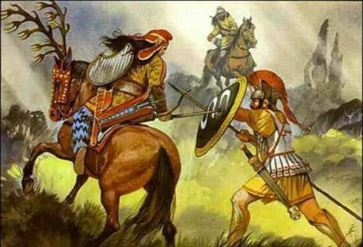
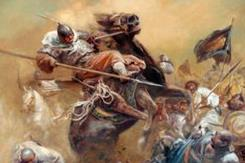

昆仑史曲 第二次天地大戰
九，偷袭辽南，碧霞元君被俘

为了解八十一战团之围，西洋女王运筹帷幄、主动寻找战机，她选调精锐部队，乘罗地这喘口气的机会亲自带兵从海上偷袭仙人岛。当时岛上及临近战团主力都被派往前线，罗地带来的又只有四娇娘等几个贴身护卫，没料到西洋女王这时会乘虚而来。突然间，整个辽南海边布满了西洋兵，将罗地和为数不多的几个大罗刹女围在中间，定要抓他问罪。她们展开密集的轮番进攻。东洋这边兵虽精，但毕竟太少了，四娇娘她们死死护住龙爷，拼命抗击。正在这千钧一发、寡不敌众的危机时刻， 珠王圣母带兵到了，她们奋力冲入重围。珠王一手持剑开路，一手拉着玄龙，与四娇娘一起杀开一条血路，逃了出去。
珠王护送罗地到连山后，带驻连山的大罗刹女战团反扑辽南迎战西洋。白娘闻讯，也急调崇明岛至镇江间的战团北上支援。机智英勇的西洋女王再次抓住战机，布置兵力围点打援，又一次造成局部优势，致使小白娘率领的五万特遣队在仙人岛阵亡了四万众。

西洋女王见这次行动已经不可能达到抓捕罗地、解围蚩尤的目的，便带领金发女们撤出辽南。但又顺路偷袭了泰山，想以此迫使天锋军驻守洞庭湖的水军回援、以破坏包围圈。见泰山防范甚严得不了手，就继续向南去袭击小泰山天锋军分部。谁知碧霞元君正在小泰山处理一个战队打算叛变投敌一案。见西洋军突然杀来，这个战队就势与西洋兵里应外合，一场恶战直杀的天昏地暗。混战中，副帅文姬阵亡，碧霞元君被俘。后泰山总部及白娘援军赶到，西洋兵急遁东海而去。
西洋对碧霞元君施以了类似催眠术的魔法，抽去了她的记忆，输入了“追杀玄龙”的信号。美丽温柔而又剑术高超的元君娘娘由此变成了天国第一杀手“云中客”。以至有了以后的“彩云追月”故事。 天锋军失帅，玄女只得重新安排。由八妖的三姐四姐轮流顶替担任碧霞元君一职。天锋军仍旧雄据泰山，镇东海，护中原。但因彩云娘娘失踪，东海防线大为减弱。----直到今日，凡界洋人还往往都是从东面海洋进攻中国的。
偷袭小泰山得手后，西洋战团原打算沿长江向西接应被围大军，但在崇明岛受到了白娘战团的有力抵抗，并且沿江向西直到江汉之地，都有白娘战团重兵严阵以待，西洋无奈只得收军。至此，这次重大军事行动，以未达解中原之围目的而告终。
| 上 一 頁 | 下 一 頁 | 回 主 頁 |